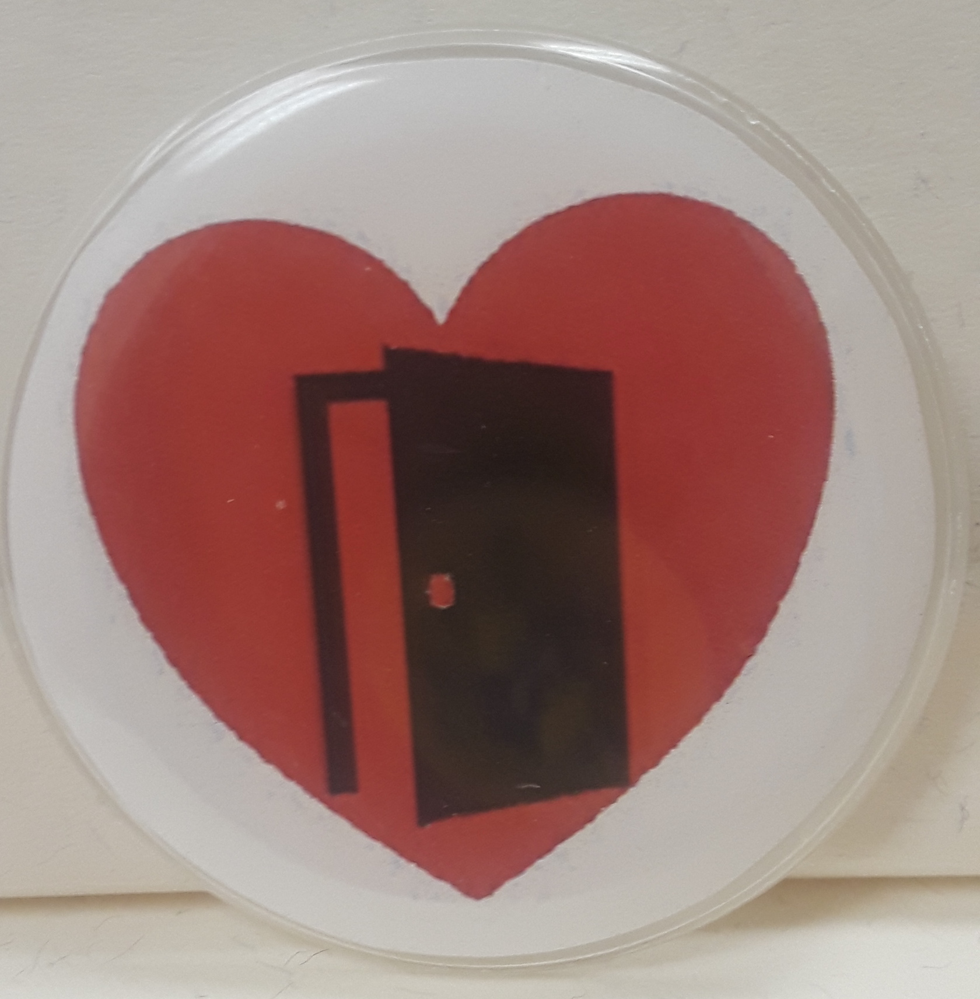

Cultural Studies and Climate Change
Now is a time of dire emergency for the Earth, a time when drastic and dramatic measures must be taken so that our planet remains habitable. The global COVID pandemic was a kind of fire drill for the climate crisis, emphasizing the the importance of science, the relatedness of all human communities, and the necessity of collaboration and changing behavior.
A cultural studies approach to understanding the climate crisis can foster a deeper understanding of the human social systems that cause global heating and possibilities for meaningful action.
This course brings together tools from the humanities and social sciences to consider: the global impact, history, politics, and ethics of global warming; imagined representations of warming in the future and their relevance to the present; and, ways to mobilize people to address climate change via social movements. This semester we will begin by paying special attention to the topic of climate migrants and refugees.
Geologists now identify our geological epoch as the Anthropocene, a time when our planet is dominated by humanity. But that domination is not equal among all people. A cultural studies perspective might more specifically say we are living in the Capitalocene; as Jason Moore describes:
The Anthropocene makes for an easy story. Easy, because it does not challenge the naturalized inequalities, alienation, and violence inscribed in modernity's strategic relations of power and production. It is an easy story to tell because it does not ask us to think about these relations at all. The mosaic of human activity in the web of life is reduced to an abstract Humanity: a homogeneous acting unit. Inequality, commodification, imperialism, patriarchy, racial formations, and much more, have been largely removed from consideration. ... Are we really living in the Anthropocene, with its return to a curiously Eurocentric vista of humanity, and its reliance on well-worn notions of resource- and technological-determinism? Or are we living in the Capitalocene, the historical era shaped by relations privileging the endless accumulation of capital? (Capitalocene)
The Anthropocene is not only dominated by the rise of global capitalism, but also a history of invasion, genocide, slavery, colonialism, and ongoing inequality and exploitation. As Kathryn Yusoff puts it in A Billon Black Anthropocenes or None:
The Anthropocene might seem to offer a dystopic future that laments the end of the world, but imperialism and ongoing (settler) colonialisms have been ending worlds for as long as they have been in existence. The Anthropocene as a politically infused geology and scientific/popular discourse is just now noticing the extinction it has chosen to continually overlook in the making of its modernity and freedom.
Course Success
As a senior-level course crosslisted in both English and Environmental Studies, this class involves careful and extensive reading. Students are expected to purchase paper copies of the books, always do the reading, bring books to class, and come prepared to contribute. Since the class is discussion-based, attendance and preparation are essential to your own learning and to the learning of your classmates. Your class participation grade is based on how well you have done the reading and prepared for class; I will ensure that your voice is heard and everyone participates!
Missing any classes will affect your learning. Missing 3 classes or more will lower your grade and missing 5 classes may lead to failing. Study my philosophy regarding discussion, preparation, participation, attendance, grading, and learning!
Students in this course are expected to keep up with current events regarding the course theme. Take advantage of the WMU library making the NY Times available to WMU students for free. The Guardian is also a good news source, especially on climate issues, and can also be accessed for free.
The course is intended to develop your ideas, your capacity to share ideas, your commitment to preserving life on earth, and your capacity to make a difference. Much of the writing for this course will be in a public voice and for an audience beyond the classroom. Your final course grade will be an average of grades for the major assignments, listed and weighted below.
WMU Climate Change Syllabus Statement: Climate change is a serious social problem, and examination of the climate disruptions due to global warming may evoke a strong emotional response. Some who come to understand the dire consequences of the climate crisis may experience what has been called 'climate grief' or 'climate anxiety.' To seek counseling, become informed about ways to deal with climate anxiety, or to get involved with others who are as concerned about the climate crisis, view the resources listed on the WMU Climate Change Working Group website.
My office is 723 Sprau Tower, 387-2605. Office hours are before and after class and by appointment. You can always reach me via email.
Hamid, Mohsin. Exit West (2018).
Vince, Gais. Nomad Century: How Climate Migration Will Reshape Our World (2022).
Parenti, Christian. Tropic of Chaos: Climate Change and the New Geography of Violence (2011).
Robinson, Kim Stanley. The Ministry of the Future (2020).
Griffith, Saul. Electrify: An Optimists Playbook for Our Clean Energy Future (2021).
Engler, Mark & Paul. This is an Uprising: How Non-Violent Revolt is Shaping the 21st Century (2017).
Additional reading and viewing linked to this syllabus and/or provided by the professor.

Major Assignments
|
Class Participation (17%) Climate Migration Public Document (Due: Feb 8) (17%) Developing World Blog Post (Due: Feb 27) (17%) Saving the World Strategy Paper (Due: Mar 27) (17%) March Climate Emergency Project (Due: Dec 5) (17%) Final Exam (17%) |

Electronic Syllabus
Mon Jan 9: Introductions
Wed Jan 11: Our Climate Future
1. Read carefully through the entire on-line syllabus. Bring any questions about the syllabus and assignments to class.
2. Join our class phone message system, Remind, by sending this message, "@428f6k8" to this number "81010" using your cell phone (your cell phone number will remain private. You can also send the message to 5863590468.).
3. Read: Review of Our Final Warning by Bill Mckibben (also in Word).
4. Write: Drawing on the reading and your prior knowledge, make a list of aspects of the climate crisis that concern you.
Mon Jan 16: MLK Day
Wed Jan 18: Migrant & RefugeesAttend an MLK Day Event such as the MLK Teach-In and panel on Environmental Racism
1. Read: Exit West Chapters 1-8.

Mon Jan 23: Migrants & Refugees
1. Read: Finish Exit West.
2. Watch Human Flow.
3. Read: "Why Migration is a Fundamental Human Right" by Mohsin Hamid (2014).
4. Read: "Cruelty to Migrants" by Mohsin Hamid (2022).
Wed Jan 25: Climate Migrants & Refugees
1. Read: Nomad Century Introduction & Chapters 1 & 2.
2. Bring to class 5 ideas for the March Climate Emergency Project.
Mon Jan 30: Climate Migrants & Refugees
1. Read: Nomad Century Introduction & Chapters 3-7.
2. Due: Study sample documents and bring 2 pages of ideas for your Climate Migration Public Document
Wed Feb 1: Climate Emergency Month Planning Day
Mon Feb 6: Climate Migrants & Refugees
1. Read: Finish Nomad Century.
Wed Feb 8: Present Climate Migration Public Documents
1. Due: Climate Migration Documents.
Mon Feb 13: Africa, Asia & Latin America
1. Read: Tropic of Chaos Chapters 1-3.
2. Key terms: catastrophic convergence, threat multiplier, Global South vs Global North, colonialism, capitalism, Cold War and Global South, Neoliberalism, failed states, technical adaptation, political adaptation, adaptation vs. armed lifeboat, counterinsurgency, climate fascism...
3. Optional: Age of Consequences.
Wed Feb 15: Africa, Asia, & Latin America
1. Read: Tropic of Chaos Chapters 4-8, and War and Warming in Afghanistan (NYT, Sept 1, 2021).
Mon Feb 20: Africa, Asia, & Latin America Cont'd
1. Read Tropic of Chaos Chapters 9-14.
2. Start developing ideas for your Developing World Blog Post.
Wed Feb 22: Climate Emergency Month Planning Day
Mon Feb 27: Africa, Asia, & Latin America
1. Read: Finish Tropic of Chaos
2. Due: Developing World Blog Post.
Wed Mar 1: Imagining the Future
1. Read: The Ministry for the Future Chapters 1-8.
2. Due: Developing World Blog Post responses to classmates.
Mar 6-10: Spring Break
Mon Mar 13: Imagining the Future
1. Read: The Ministry for the Future Chapters 9-38.
Wed Mar 15: Imagining the Future
1. Read: The Ministry for the Future Chapters 39-68.
Mon Mar 20: Imagining the Future
1. Read: The Ministry for the Future Chapters 69-end.
2. Write: A several page start on the Stategies for Saving the Future Paper.
Wed Mar 22: Electrify!
1. Read: Electrify Preface to Chapter 7.
Mon Mar 27: Electrify!
1. Read: Electrify Chapter 8-10.
Wed Mar 29: Electrify!
1. Read: Electrify Chapter 11-17 & Appendexis A & B.
Mon Apr 3: Promoting Electricity Transformation
1. Read: 1) Carbon Bombs; 2) Huge Expansion of Oil Pipelines; 3) Oil and Gas Emissions 3x Higher than Claimed; 4) Fossil Fuel Lobbyists at Climate Summit; 5) Saudis Keep World Hooked on Oil; 6) Texas Group Fights Climate Action; and, 7) Oil Firms Dismiss Climate Action.
2. Write: Given what the articles above report, devise 3 ideas to promote going electric, with a paragraph on each, 1-2 pages.
Wed Apr 5: Competing to Go Electric
1) Working in groups students present ideas to convice, facilitate, force?, electric transformation in America. May the best idea win!
2) Due: 1-2 page summary and self-evaluation of your contribution to March Climate Emergency Project & propose a grade.
Mon Apr 10: Social Movements
1. Watch: Eyes on the Prize, Part 4, No Easy Walk
2. Read: This is an Uprising Introduction and Chapters 1-4.
3. Optional: 198 Methods of Non-Violent Direct Action and King's Letter From the Birmingham Jail
Wed Apr 12: Social Movements Cont'd
Read: This is an Uprising Read at least the chapter you are assigned (more if possible) your choosing. Prepare a presentation on 1) historical events examined in the chapter, 2) key terms, and 3) conclusions the Englers draw about the significance for social organizing
Mon Apr 17: Social Movements Cont'd
Read: How to Blow Up a Pipeline Chapters 1 and 2.
Wed Apr 19: Social Movements Cont'd
Read: How to Blow Up a Pipeline Chapter 3.
Apr. 24-27 Finals Week
Wed Apr 26 2:45-4:45: Final Exam